Путь «Ошибка»
От слабой к сильной: Seq 9 «Мародёр» → Seq 1 «Червь Времени». Сменить путь можно на «Шут» или «Дверь» — с Seq 5 и сильнее, зельем на ступень выше (как).
| Seq | Последовательность | Ступень сервера |
|---|---|---|
| 9 | Мародёр | II |
| 8 | Мошенник | III |
| 7 | Криптолог | IV |
| 6 | Прометей | V |
| 5 | Похититель Снов | VI |
| 4 | Паразит | VII |
| 3 | Наставник Обмана | VIII |
| 2 | Троянский Конь Судьбы | — |
| 1 | Червь Времени | — |
У каждой последовательности: зелье и его ингредиенты (главный — первым), способности, которые она открывает, и отыгрыш — действия, которые переваривают зелье. Ингредиенты указаны с двумя самыми доступными источниками; все — по ссылке. Ингредиенты Seq 9–6 этого пути бывают и в товарах у жителя Торговец Потусторонних — у каждого по 2 случайных предложения на уровень (цены).
Seq 9 · Мародёр
Зелье  Мародёр Зелье, формула
Мародёр Зелье, формула  Мародёр Рецепт зелья (Последовательность 9). Эта Seq нужна для ступени II.
Мародёр Рецепт зелья (Последовательность 9). Эта Seq нужна для ступени II.
Ингредиенты
 Чёрный комар в кровавых крапинах — существо мода: Пузырь (водится: Мир духов; приходит и Ночью Мира духов) — 38 % за убийство. Все источники (2)
Чёрный комар в кровавых крапинах — существо мода: Пузырь (водится: Мир духов; приходит и Ночью Мира духов) — 38 % за убийство. Все источники (2) Чужая кровь — добыча: Эндермен (убить игроком) — 15 % за убийство. Все источники (3)
Чужая кровь — добыча: Эндермен (убить игроком) — 15 % за убийство. Все источники (3) Обрезки ногтей разных людей — крафт: верстак; существо мода: Гнойная рука (водится: Мир духов) — 9,4 % за убийство. Все источники (4)
Обрезки ногтей разных людей — крафт: верстак; существо мода: Гнойная рука (водится: Мир духов) — 9,4 % за убийство. Все источники (4) Сапфир — крафт: верстак; существо мода: Синий чародей (водится: Мир духов; приходит и Ночью Мира духов) — 5,3 % за убийство. Все источники (4)
Сапфир — крафт: верстак; существо мода: Синий чародей (водится: Мир духов; приходит и Ночью Мира духов) — 5,3 % за убийство. Все источники (4) Порошок вербены — блок: Розовый тюльпан, Пион (ножницами) — 25 % за блок; сундук: Постройки Мира духов — 54 %. Все источники (4)
Порошок вербены — блок: Розовый тюльпан, Пион (ножницами) — 25 % за блок; сундук: Постройки Мира духов — 54 %. Все источники (4)
Способности
- Медитация — Медитировать, восполняя духовность
- Физическое усиление (пассивная)
- Пассивная кража (пассивная) — Есть шанс украсть способности у мобов или игроков, которых вы бьёте
Отыгрыш — переваривание за действие и перерыв между засчитанными:
- Убить исподтишка — 0,95 %, раз в 2 с
- Подобрать предмет — 0,47 %, раз в 5 с
- Сломать бочку — 0,47 %, раз в 5 с
- Сломать сундук — 0,76 %, раз в 10 с
- Убить моба, не нацеленного на вас — 0,57 %, раз в 5 с
- Подобрать золото — 0,57 %, раз в 5 с
- Подобрать гнилую плоть — 0,28 %, раз в 5 с
Seq 8 · Мошенник
Зелье 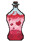 Мошенник Рецепт зелья (Последовательность 8). Эта Seq нужна для ступени III.
Мошенник Рецепт зелья (Последовательность 8). Эта Seq нужна для ступени III.
Ингредиенты
 Кувшинчик с человеческим лицом — крафт: верстак; сундук: Постройки Мира духов — 24 %. Все источники (4)
Кувшинчик с человеческим лицом — крафт: верстак; сундук: Постройки Мира духов — 24 %. Все источники (4) Чужие слёзы — крафт: верстак. Все источники (3)
Чужие слёзы — крафт: верстак. Все источники (3) Лазурит — крафт: верстак; сундук: Постройки Мира духов — 29 %. Все источники (5)
Лазурит — крафт: верстак; сундук: Постройки Мира духов — 29 %. Все источники (5) Бальзам белого каштана — крафт: верстак. Все источники (3)
Бальзам белого каштана — крафт: верстак. Все источники (3)- Чужая кровь — добыча: Эндермен (убить игроком) — 15 % за убийство. Все источники (3)
Способности
- Кража — На игроке — попытка украсть любой предмет из его инвентаря. На мобе — случайная добыча, связанная с ним: мясо у животных, стрелы у скелета
- Ментальное расстройство — Ненадолго оглушить цель
Отыгрыш — переваривание за действие и перерыв между засчитанными:
- Поторговать с жителем — 1,3 %, раз в 20 с
- Использовать нотный блок — 0,42 %, раз в 5 с
- Убить исподтишка — 0,84 %, раз в 2 с
- Использовать бирку — 0,42 %, раз в 10 с
- Поставить табличку — 0,42 %, раз в 15 с
- Убить моба, не нацеленного на вас — 0,42 %, раз в 5 с
- Выудить сокровище — 0,42 %, раз в 20 с
Seq 7 · Криптолог
Зелье 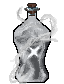 Криптолог Рецепт зелья (Последовательность 7). Эта Seq нужна для ступени IV.
Криптолог Рецепт зелья (Последовательность 7). Эта Seq нужна для ступени IV.
Ингредиенты
 Мозг сфинкса — сундук: Пустынный храм — 25 %; существо мода: Демон знания (водится: Мир духов, океаны; приходит и Ночью Мира духов) — 19 % за убийство. Все источники (3)
Мозг сфинкса — сундук: Пустынный храм — 25 %; существо мода: Демон знания (водится: Мир духов, океаны; приходит и Ночью Мира духов) — 19 % за убийство. Все источники (3) Кровь сфинкса — пустая бутылка: Верблюд — 40 % за попытку, бутылка остывает 10 с; существо мода: Демон знания (водится: Мир духов, океаны; приходит и Ночью Мира духов) — 2,9 % за убийство. Все источники (4)
Кровь сфинкса — пустая бутылка: Верблюд — 40 % за попытку, бутылка остывает 10 с; существо мода: Демон знания (водится: Мир духов, океаны; приходит и Ночью Мира духов) — 2,9 % за убийство. Все источники (4) Слизь колонии душезачаровывающих насекомых — крафт: верстак; сундук: Постройки Мира духов — 26 %. Все источники (5)
Слизь колонии душезачаровывающих насекомых — крафт: верстак; сундук: Постройки Мира духов — 26 %. Все источники (5) Лунный камень — блок: Руда незерского кварца (только природный блок) — 12 % за блок; сундук: Постройки Мира духов — 24 %. Все источники (5)
Лунный камень — блок: Руда незерского кварца (только природный блок) — 12 % за блок; сундук: Постройки Мира духов — 24 %. Все источники (5) Дикая роза — блок: Розовый куст (ножницами; биом «лес») — 30 % за блок; существо мода: Безголовая невеста (водится: Мир духов) — 0,49 % за убийство. Все источники (4)
Дикая роза — блок: Розовый куст (ножницами; биом «лес») — 30 % за блок; существо мода: Безголовая невеста (водится: Мир духов) — 0,49 % за убийство. Все источники (4)
Способности
- Дешифровка — Узнать о врагах и о том, какими предметами они владеют
Отыгрыш — переваривание за действие и перерыв между засчитанными:
- Использовать кафедру — 1,1 %, раз в 15 с
- Использовать картографический стол — 0,74 %, раз в 10 с
- Применить «Дешифровка» — 1,5 %, раз в 15 с
- Прочитать подписанную книгу — 0,59 %, раз в 15 с
- Открыть сундук Края — 0,44 %, раз в 10 с
- Расчистить подозрительный блок — 0,59 %, раз в 20 с
- Открыть резной книжный шкаф — 0,44 %, раз в 15 с
- Добыть древние обломки — 0,37 %, раз в 30 с
Seq 6 · Прометей
Зелье 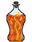 Прометей Рецепт зелья (Последовательность 6). Эта Seq нужна для ступени V.
Прометей Рецепт зелья (Последовательность 6). Эта Seq нужна для ступени V.
Ингредиенты
 Кристаллический нитевик — добыча: Эндермит — 12 % за убийство игроком; существо мода: Злоуст (водится: Мир духов; приходит и Ночью Мира духов) — 14 % за убийство. Все источники (3)
Кристаллический нитевик — добыча: Эндермит — 12 % за убийство игроком; существо мода: Злоуст (водится: Мир духов; приходит и Ночью Мира духов) — 14 % за убийство. Все источники (3) Только что украденное вино — сундук: Аванпост разбойников, Лесной особняк — 35 %. Все источники (3)
Только что украденное вино — сундук: Аванпост разбойников, Лесной особняк — 35 %. Все источники (3) Остаточный порошок Призрака в плаще — крафт: верстак; существо мода: Призрак (водится: Мир духов, Подземный мир; приходит и Ночью Мира духов) — 15 % за убийство. Все источники (3)
Остаточный порошок Призрака в плаще — крафт: верстак; существо мода: Призрак (водится: Мир духов, Подземный мир; приходит и Ночью Мира духов) — 15 % за убийство. Все источники (3) Цитрин — крафт: верстак; сундук: Постройки Мира духов — 36 %. Все источники (4)
Цитрин — крафт: верстак; сундук: Постройки Мира духов — 36 %. Все источники (4) Эфирное масло лиственницы — пустая бутылка: Еловое бревно (биом «тайга») — 60 % за попытку, бутылка остывает 1 с. Все источники (2)
Эфирное масло лиственницы — пустая бутылка: Еловое бревно (биом «тайга») — 60 % за попытку, бутылка остывает 1 с. Все источники (2)
Способности
- Дар — Подарить цели предмет из второй руки. Некоторые предметы, например динамит или наковальни, действуют по-особому
- Кража способностей — Украсть у противника способность, ненадолго лишив его возможности её применять. Сила растёт с вашей последовательностью
Отыгрыш — переваривание за действие и перерыв между засчитанными:
- Убить сильного моба — 0,63 %, раз в 5 с
- Убить, будучи в меньшинстве — 0,63 %, раз в 5 с
- Применить «Кража способностей» — 1,3 %, раз в 20 с
- Поджечь — 0,38 %, раз в 5 с
- Получить урон от огня — 0,38 %, раз в 5 с
- Создать огненный заряд — 0,32 %, раз в 15 с
- Выжить на грани смерти — 0,32 %, раз в 10 с
Seq 5 · Похититель Снов
Зелье 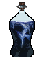 Похититель Снов Рецепт зелья (Последовательность 5). Эта Seq нужна для ступени VI.
Похититель Снов Рецепт зелья (Последовательность 5). Эта Seq нужна для ступени VI.
Ингредиенты
 Сердце Крысы-пожирательницы снов — добыча: Чешуйница — 4 % за убийство игроком; существо мода: Демон знания (водится: Мир духов, океаны; приходит и Ночью Мира духов) — 14 % за убийство.
Сердце Крысы-пожирательницы снов — добыча: Чешуйница — 4 % за убийство игроком; существо мода: Демон знания (водится: Мир духов, океаны; приходит и Ночью Мира духов) — 14 % за убийство. Кровь Крысы-пожирательницы снов — пустая бутылка: Летучая мышь — 40 % за попытку, бутылка остывает 5 с; существо мода: Демон знания (водится: Мир духов, океаны; приходит и Ночью Мира духов) — 14 % за убийство. Все источники (3)
Кровь Крысы-пожирательницы снов — пустая бутылка: Летучая мышь — 40 % за попытку, бутылка остывает 5 с; существо мода: Демон знания (водится: Мир духов, океаны; приходит и Ночью Мира духов) — 14 % за убийство. Все источники (3) Лишённое духовности порочное дыхание — пустая бутылка: Огонь душ (в биоме: Долина песка душ) — 50 % за попытку, бутылка остывает 2 с; существо мода: Призрак (водится: Мир духов, Подземный мир; приходит и Ночью Мира духов) — 11 % за убийство. Все источники (3)
Лишённое духовности порочное дыхание — пустая бутылка: Огонь душ (в биоме: Долина песка душ) — 50 % за попытку, бутылка остывает 2 с; существо мода: Призрак (водится: Мир духов, Подземный мир; приходит и Ночью Мира духов) — 11 % за убийство. Все источники (3) Целестин — блок: Лазуритовая руда, Глубинносланцевая лазуритовая руда (только природный блок) — 12 % за блок; сундук: Постройки Мира духов — 22 %. Все источники (4)
Целестин — блок: Лазуритовая руда, Глубинносланцевая лазуритовая руда (только природный блок) — 12 % за блок; сундук: Постройки Мира духов — 22 %. Все источники (4) Гидролат лаванды — пустая бутылка: Лук-батун — 60 % за попытку, бутылка остывает 1 с. Все источники (2)
Гидролат лаванды — пустая бутылка: Лук-батун — 60 % за попытку, бутылка остывает 1 с. Все источники (2)
Способности
- Духовное зрение
- Приземлённая концептуальная кража — Красть у цели обыденные способности: зрение, умение ходить, расстояние между вами или здоровье
Отыгрыш — переваривание за действие и перерыв между засчитанными:
- Не спать всю ночь — 1,1 %, раз в 30 с
- Убить во тьме — 0,53 %, раз в 2 с
- Стоять в полной темноте — 0,16 %, раз в 20 с
- Выпить зелье ночного зрения — 0,26 %, раз в 10 с
- Убить во тьме — 0,42 %, раз в 5 с
- Подобрать предмет — 0,21 %, раз в 5 с
Seq 4 · Паразит
Зелье 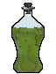 Паразит Рецепт зелья (Последовательность 4). Эта Seq нужна для ступени VII.
Паразит Рецепт зелья (Последовательность 4). Эта Seq нужна для ступени VII.
Ингредиенты
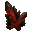
Посмертный кристалл Похитителя душ — существо мода: Призрак (водится: Мир духов, Подземный мир; приходит и Ночью Мира духов) — 7,3 % за убийство. Кровь Похитителя душ — пустая бутылка: Зомбифицированный пиглин — 35 % за попытку, бутылка остывает 5 с; существо мода: Призрак (водится: Мир духов, Подземный мир; приходит и Ночью Мира духов) — 7,3 % за убийство. Все источники (3)
Кровь Похитителя душ — пустая бутылка: Зомбифицированный пиглин — 35 % за попытку, бутылка остывает 5 с; существо мода: Призрак (водится: Мир духов, Подземный мир; приходит и Ночью Мира духов) — 7,3 % за убийство. Все источники (3) Выделения злого насекомого-кукловода — крафт: верстак; сундук: Постройки Мира духов — 17 %. Все источники (4)
Выделения злого насекомого-кукловода — крафт: верстак; сундук: Постройки Мира духов — 17 %. Все источники (4) Аметист — блок: Аметистовая друза (только природный блок) — 20 % за блок; сундук: Постройки Мира духов — 15 %. Все источники (4)
Аметист — блок: Аметистовая друза (только природный блок) — 20 % за блок; сундук: Постройки Мира духов — 15 %. Все источники (4) Заточённая душа — добыча: Визер-скелет (во второй руке пустая бутылка, она тратится) — 12 % за убийство игроком; сундук: Постройки Мира духов — 15 %. Все источники (3)
Заточённая душа — добыча: Визер-скелет (во второй руке пустая бутылка, она тратится) — 12 % за убийство игроком; сундук: Постройки Мира духов — 15 %. Все источники (3)
Способности
- Гадание
- Мифическая форма
- Паразитирование — Вселиться в цель; вы неуязвимы, пока она не умрёт
- Управление носителем — Управлять носителем: вытягивать его здоровье для своего исцеления или убить его
- Создание аватара — Создать своего аватара на 1 последовательность ниже вас
Отыгрыш — переваривание за действие и перерыв между засчитанными:
- Приручить животное — 0,42 %, раз в 10 с
- Убить исподтишка — 0,42 %, раз в 2 с
- Убить моба, не нацеленного на вас — 0,21 %, раз в 5 с
- Покормить животное — 0,17 %, раз в 10 с
- Использовать поводок — 0,21 %, раз в 10 с
- Подобрать предмет — 0,13 %, раз в 5 с
- Убить горящего моба — 0,21 %, раз в 5 с
Seq 3 · Наставник Обмана
Зелье 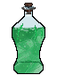 Наставник Обмана Рецепт зелья (Последовательность 3). Эта Seq нужна для ступени VIII.
Наставник Обмана Рецепт зелья (Последовательность 3). Эта Seq нужна для ступени VIII.
Ингредиенты
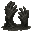
Ладони Болотного великана — сундук: Постройки Мира духов — 2,3 %; существо мода: Гнойная рука (водится: Мир духов) — 5,7 % за убийство. Кровь Болотного великана — пустая бутылка: Ведьма — 25 % за попытку, бутылка остывает 5 с; сундук: Постройки Мира духов — 11 %. Все источники (3)
Кровь Болотного великана — пустая бутылка: Ведьма — 25 % за попытку, бутылка остывает 5 с; сундук: Постройки Мира духов — 11 %. Все источники (3) Грибной саван Богохульного жреца — блок: Блок красного гриба, Блок коричневого гриба (ножницами; в биоме: Тёмный лес; только природный блок) — 0,8 % за блок; сундук: Постройки Мира духов — 7,9 %. Все источники (3)
Грибной саван Богохульного жреца — блок: Блок красного гриба, Блок коричневого гриба (ножницами; в биоме: Тёмный лес; только природный блок) — 0,8 % за блок; сундук: Постройки Мира духов — 7,9 %. Все источники (3) Золото — крафт: камнерез; сундук: Постройки Мира духов — 35 %. Все источники (4)
Золото — крафт: камнерез; сундук: Постройки Мира духов — 35 %. Все источники (4) Гидролат водяной фиалки — пустая бутылка: Синяя орхидея (в биоме: Болото, Мангровое болото) — 25 % за попытку, бутылка остывает 2 с.
Гидролат водяной фиалки — пустая бутылка: Синяя орхидея (в биоме: Болото, Мангровое болото) — 25 % за попытку, бутылка остывает 2 с.
Способности
- Обман — Обмануть врагов вокруг, чтобы они забыли о вас, или обмануть мир и ненадолго стать неуязвимым
Отыгрыш — переваривание за действие и перерыв между засчитанными:
- Поторговать с жителем — 0,47 %, раз в 20 с
- Атаковать более сильного моба — 0,32 %, раз в 5 с
- Применить «Обман» — 0,63 %, раз в 15 с
- Поговорить с жителем — 0,19 %, раз в 10 с
- Использовать бирку — 0,16 %, раз в 10 с
- Поставить табличку — 0,16 %, раз в 15 с
Seq 2 · Троянский Конь Судьбы
Зелье 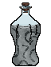 Троянский Конь Судьбы Рецепт зелья (Последовательность 2).
Троянский Конь Судьбы Рецепт зелья (Последовательность 2).
Ингредиенты
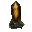
Посмертный кристалл жреца двора Короля великанов — существо мода: Каменный голем (водится: весь верхний мир) — 0,98 % за убийство. Вода древней реки — сундук: Постройки Мира духов — 2,1 %; существо мода: Погибель (водится: Мир духов; приходит и Ночью Мира духов) — 5 % за убийство.
Вода древней реки — сундук: Постройки Мира духов — 2,1 %; существо мода: Погибель (водится: Мир духов; приходит и Ночью Мира духов) — 5 % за убийство. Червь духа — блок: Мицелий (лопатой; только природный блок) — 12 % за блок; существо мода: Погибель (водится: Мир духов; приходит и Ночью Мира духов) — 5 % за убийство. Все источники (4)
Червь духа — блок: Мицелий (лопатой; только природный блок) — 12 % за блок; существо мода: Погибель (водится: Мир духов; приходит и Ночью Мира духов) — 5 % за убийство. Все источники (4) Червь звезды — существо мода: Погибель (водится: Мир духов; приходит и Ночью Мира духов) — 1,7 % за убийство.
Червь звезды — существо мода: Погибель (водится: Мир духов; приходит и Ночью Мира духов) — 1,7 % за убийство. Ложная история, принятая за правду — существо мода: Демон знания (водится: Мир духов, океаны; приходит и Ночью Мира духов) — 2,9 % за убийство.
Ложная история, принятая за правду — существо мода: Демон знания (водится: Мир духов, океаны; приходит и Ночью Мира духов) — 2,9 % за убийство.
Способности
- Власть ангела — Ангельская сила: странствуйте по Миру духов и сокрушайте артефакты
- Создание лазеек — Создать область, где враги хаотично телепортируются, а их способности крадутся
- Перекачка судьбы — Перекачать чью-то судьбу: всё, что должно навредить вам, перейдёт на неё
Отыгрыш — переваривание за действие и перерыв между засчитанными:
- Поторговать с жителем — 0,21 %, раз в 20 с
- Применить «Перекачка судьбы» — 0,63 %, раз в 20 с
- Убить моба, не нацеленного на вас — 0,17 %, раз в 5 с
- Поговорить с жителем — 0,13 %, раз в 15 с
- Создать динамит — 0,13 %, раз в 20 с
Seq 1 · Червь Времени
Зелье 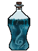 Червь Времени Рецепт зелья (Последовательность 1).
Червь Времени Рецепт зелья (Последовательность 1).
Ингредиенты
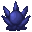
Червь Времени Характеристика Потустороннего (Последовательность 1) — характеристика Потустороннего Старинные часы — сундук: Постройки Мира духов — 5,6–6,9 %; существо мода: Погибель (водится: Мир духов; приходит и Ночью Мира духов) — 1,7 % за убийство.
Старинные часы — сундук: Постройки Мира духов — 5,6–6,9 %; существо мода: Погибель (водится: Мир духов; приходит и Ночью Мира духов) — 1,7 % за убийство. Потрёпанный альманах — существо мода: Демон знания (водится: Мир духов, океаны; приходит и Ночью Мира духов) — 0,95 % за убийство.
Потрёпанный альманах — существо мода: Демон знания (водится: Мир духов, океаны; приходит и Ночью Мира духов) — 0,95 % за убийство. Отрезок сокрытой судьбы — существо мода: Погибель (водится: Мир духов; приходит и Ночью Мира духов) — 1,7 % за убийство.
Отрезок сокрытой судьбы — существо мода: Погибель (водится: Мир духов; приходит и Ночью Мира духов) — 1,7 % за убийство. Часы — обычный предмет
Часы — обычный предмет
Способности
- Концептуальная кража — Красть концепции: украсть день, сделав ночь, или украсть ночь, сделав день. Можно также украсть область и сохранить её в инвентаре
- Управление временем — Разными способами управлять временем в области
Отыгрыш — переваривание за действие и перерыв между засчитанными:
- Убить моба, не нацеленного на вас — 0,11 %, раз в 5 с
- Применить «Управление временем» — 0,32 %, раз в 20 с
- Встретить рассвет — 0,053 %, раз в 1 мин
- Взглянуть на часы — 0,032 %, раз в 10 с
- Добыть древние обломки — 0,053 %, раз в 30 с